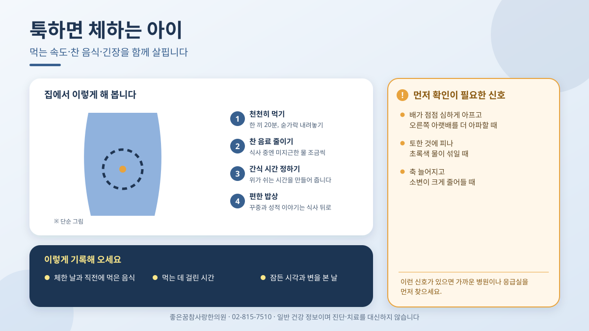

이종호 한의사 감수좋은꿈참사랑한의원 대표원장 (한의사 면허번호 19769)발행 2026-11-26 · 수정 2026-11-26
이 글의 차례
저녁 식탁에서 아이가 몇 숟가락 뜨다 말고 배를 문지릅니다. "엄마, 여기가 꽉 막힌 것 같아." 손가락이 가리키는 곳은 배꼽이 아니라 명치 언저리입니다. 얼굴은 하얘지고, 트림을 하려다 잘 안 되는지 가슴을 톡톡 두드립니다. 보호자분은 또 체했나 싶어 등을 쓸어 주십니다.
진료실에서 "우리 아이는 너무 잘 체해요"라는 말씀을 자주 듣습니다. 한 번 체하고 나면 하루 이틀 밥맛이 없고, 겨우 입맛이 돌아오나 싶으면 다시 체하는 일이 되풀이됩니다. 그러다 보니 아이는 밥상 앞에서 조심스러워지고, 보호자분은 무엇을 먹여야 할지 매번 고민하시게 됩니다.
체했다는 말은 한국 사람에게 아주 익숙한 표현이지만, 아이마다 그 속사정은 조금씩 다릅니다. 너무 빨리 먹어서일 수도 있고, 차가운 음식이 한꺼번에 들어가서일 수도 있고, 마음이 긴장한 상태에서 먹어서일 수도 있습니다. 오늘은 잘 체하는 아이를 어떻게 바라보고 돌보면 좋을지 차근차근 말씀드리겠습니다.
아이가 말하는 '체했다'는 어떤 상태인가요?
아이들이 체했다고 말할 때는 대개 명치가 답답하고, 무언가 걸려서 내려가지 않는 느낌, 속이 메스껍고 트림이 나오려다 막히는 느낌을 함께 이야기합니다. 어떤 아이는 배가 아프다고 하고, 어떤 아이는 가슴이 답답하다고 하며, 어떤 아이는 그냥 밥을 안 먹겠다고만 합니다.
함께 나타나는 모습도 다양합니다. 얼굴이 창백해지고 손발이 차가워지거나, 머리가 아프다고 하거나, 기운 없이 눕고 싶어 하기도 합니다. 심하면 먹은 것을 토하고 나서야 조금 편해졌다고 말하는 아이도 있습니다.
의학적으로 보면 이런 모습은 위가 음식을 아래로 내려보내는 움직임이 잠시 느려지거나, 위가 예민해져 조금만 차도 불편함을 크게 느끼는 상태와 가깝습니다. 아이의 위는 어른보다 작고 아직 자라는 중이라, 같은 양과 속도로 먹어도 더 쉽게 부담을 느낄 수 있습니다.
왜 어떤 아이는 유난히 잘 체할까요
잘 체하는 데에는 대개 한 가지보다 여러 이유가 겹쳐 있습니다. 진료실에서 이야기를 나눠 보면 아래와 같은 경우가 자주 보입니다.
- 밥을 빨리 먹거나 잘 씹지 않고 삼키는 습관
- 학원 시간 때문에 급하게 먹고 바로 움직이는 생활
- 찬 우유, 아이스크림, 찬 음료를 식사와 함께 많이 먹는 경우
- 간식을 자주 먹어 위가 쉬는 시간이 짧은 경우
- 혼나거나 긴장한 상태로 밥상에 앉는 경우
- 잠이 늦고 짧아 아침에 속이 덜 깬 상태로 먹는 경우
이 가운데 많은 보호자분이 놓치시는 것이 긴장입니다. 위와 장은 마음의 영향을 크게 받는 기관입니다. 새 학기, 시험, 친구 관계처럼 마음이 쫓기는 시기에는 같은 음식을 먹어도 유난히 잘 체하는 아이가 많습니다.
타고난 체질도 한몫합니다. 한의학에서는 소화하는 힘이 약한 아이를 비위가 약하다고 표현합니다. 이런 아이는 대체로 입이 짧고, 조금만 먹어도 배부르다고 하며, 손발이 차고, 얼굴빛이 희거나 누런 편인 경우가 많습니다. 물론 체질은 참고일 뿐이고, 생활 습관을 함께 봐야 합니다.
키가 부쩍 크는 시기에는 먹는 양은 늘었는데 먹는 습관은 예전 그대로인 경우도 있습니다. 배는 고프고 시간은 없으니 한꺼번에 많이, 빨리 먹게 됩니다. 성장기라는 특성과 바쁜 일과가 겹치면서 속이 따라가지 못하는 것입니다.
비슷해 보이지만 다르게 살펴야 하는 경우
잘 체하는 것처럼 보여도 다른 이유가 숨어 있을 때가 있습니다. 그래서 진료실에서는 체했다는 말만 듣고 바로 결론을 내리지 않고, 비슷한 모습들과 나눠서 살핍니다.
배꼽 둘레가 자주 아프고 변이 며칠씩 안 나온다면 변비가 함께 있는지 봐야 합니다. 변이 장에 오래 머물면 위에서 내려가는 흐름도 덩달아 더뎌져 속이 더부룩해질 수 있습니다. 반대로 변이 자주 묽다면 장이 예민한 쪽을 함께 살핍니다.
특정 음식을 먹은 뒤에만 반복된다면 그 음식이 몸에 맞지 않는 것일 수 있습니다. 우유를 먹으면 배가 아프고 가스가 차는 아이, 기름진 음식 뒤에만 체하는 아이가 그렇습니다. 이때는 음식 일기가 큰 단서가 됩니다.
아침에만, 그것도 학교 가는 날에만 명치가 아프다면 마음의 긴장을 함께 봐야 합니다. 주말이나 방학에는 멀쩡하다면 꾀병이라기보다 몸이 긴장을 먼저 표현하는 것일 수 있습니다. 아이를 탓하기보다 그 시간에 무엇이 아이를 힘들게 하는지 함께 찾아보시는 편이 좋습니다.
체한 것 같을 때 집에서는 어떻게 하나요?
아이가 체했다고 하면 먼저 먹던 것을 멈추게 하고 편한 자세로 쉬게 해 주세요. 억지로 더 먹이거나 소화시키라고 뛰게 하는 것은 오히려 속을 불편하게 할 수 있습니다. 상체를 조금 세운 자세로 앉거나 왼쪽으로 비스듬히 눕는 것이 편한 아이가 많습니다.
따뜻한 손으로 배를 시계 방향으로 천천히 쓸어 주는 것도 좋습니다. 배꼽을 중심으로 큰 원을 그리듯 부드럽게 쓰다듬으면 아이 마음도 함께 풀립니다. 힘을 세게 주지 말고, 아이가 싫어하면 바로 멈추세요.
물은 미지근한 것으로 한두 모금씩 나눠서 주세요. 한꺼번에 많이 마시면 속이 더 차서 불편할 수 있습니다. 속이 조금 편해지면 다음 끼니는 죽이나 부드러운 밥, 맑은 국처럼 소화가 쉬운 음식으로 양을 줄여 시작하시면 됩니다.
손을 따거나 세게 주무르는 방법을 쓰시는 가정도 많은데, 아이 피부는 얇고 상처가 나기 쉬워 권하지 않습니다. 몇 시간이 지나도 나아지지 않거나 아래에 적은 신호가 보이면 집에서 버티지 마시고 진료를 받아 보세요.
스스로 점검해 보세요
우리 아이가 어떤 쪽에 가까운지 아래 질문으로 가볍게 짚어 보세요. 해당하는 것이 많을수록 생활 속에서 바꿔 볼 거리가 많다는 뜻입니다.
- 한 끼를 10분 안에 다 먹는 날이 많다
- 식사 중이나 직후에 찬 음료를 자주 마신다
- 간식을 하루 세 번 넘게 먹는다
- 저녁을 먹고 1시간 안에 잠자리에 드는 날이 많다
- 체하는 날이 시험이나 발표 같은 일과 겹친다
- 변을 보는 간격이 사흘 이상 벌어질 때가 있다
- 손발이 늘 차고 조금만 먹어도 배부르다고 한다
이 점검은 진단이 아니라 이야기를 시작하기 위한 실마리입니다. 체크한 항목을 메모해 오시면 진료실에서 훨씬 빨리 아이의 생활 흐름을 파악할 수 있습니다.
학교나 학원에서 체할 때는 어떻게 하나요?
잘 체하는 아이는 집 밖에서 속이 불편해지는 일도 잦습니다. 급식 시간이 짧아 서둘러 먹거나, 학원 사이에 편의점 음식을 급하게 먹고 바로 수업에 들어가는 날이 그렇습니다. 아이가 혼자 참고 넘기다 집에 와서야 말하는 경우도 많습니다.
미리 아이와 약속을 정해 두면 좋습니다. 속이 답답하면 선생님께 말하고 잠시 쉬어도 된다는 것, 남은 음식은 억지로 다 먹지 않아도 된다는 것을 알려 주세요. 담임 선생님께 아이가 잘 체하는 편이라고 미리 말씀드려 두면 아이도 한결 마음 편하게 지낼 수 있습니다.
학원을 오가는 날에는 끼니를 거르지 않도록 시간표를 함께 살펴봐 주세요. 이동하며 먹기보다 잠깐이라도 앉아서 먹을 수 있는 시간을 만들어 주는 것만으로도 체하는 날이 줄어드는 아이가 있습니다. 주먹밥이나 바나나처럼 부드럽고 먹기 쉬운 것을 챙겨 주셔도 좋습니다.
먼저 이렇게 여쭙니다
처음 오시면 저는 대략 이런 순서로 여쭙니다. 아이와 보호자분이 함께 답해 주시면 됩니다.
- 언제부터, 한 달에 몇 번 정도 체한다고 하나요?
- 체할 때 주로 무엇을, 어떤 상황에서 먹었나요?
- 명치, 배꼽 둘레, 아랫배 가운데 어디가 불편하다고 하나요?
- 토하거나 설사를 하거나 열이 나는 일이 함께 있었나요?
- 변은 며칠에 한 번, 어떤 모양으로 보나요?
- 잠드는 시각과 일어나는 시각은 어떤가요?
- 요즘 학교나 학원, 친구 관계에서 신경 쓰이는 일이 있나요?
마지막 질문은 아이에게 직접 여쭙기도 합니다. 보호자분 앞에서 말하기 어려워하는 아이도 있어서, 아이 표정을 보며 천천히 이야기를 나눕니다. 키와 몸무게가 잘 늘고 있는지도 함께 확인합니다.
일상에서 먼저 해 볼 수 있는 것
잘 체하는 아이에게 가장 먼저 권하는 것은 먹는 속도를 늦추는 일입니다. 한 숟가락 뜨고 숟가락을 내려놓는 연습, 한 입에 스무 번쯤 씹어 보는 놀이처럼 아이가 재미있게 따라 할 수 있는 방법을 찾아보세요.
- 한 끼는 20분 정도 여유를 두고 먹기
- 식사 중 찬 음료 대신 미지근한 물 조금씩
- 간식은 정해진 시간에 한두 번으로 줄이기
- 저녁은 잠자리 2~3시간 전에 마치기
- 밥 먹은 직후 격한 운동 대신 가볍게 걷기
- 밥상에서는 꾸중이나 성적 이야기 미루기
간식을 줄일 때는 한꺼번에 끊기보다 시간을 정해 주는 방식이 오래갑니다. 위도 쉬는 시간이 있어야 다음 끼니를 받아들일 준비를 합니다. 오후 간식을 한 번으로 정하고, 저녁 식사 2시간 전에는 먹지 않는 식으로 시작해 보세요.
밥상 분위기도 중요합니다. 숙제를 다 했는지, 시험이 어땠는지 같은 이야기는 밥을 다 먹은 뒤로 미뤄 주세요. 밥상에서 긴장이 풀리는 경험이 쌓이면 아이의 속도 조금씩 편해지는 경우가 많습니다.
아침에 속이 불편한 아이라면 일어나자마자 먹이기보다 세수하고 옷을 입는 사이에 몸이 깰 시간을 주세요. 따뜻한 물 한 모금으로 시작해 부드러운 음식을 조금 먹고, 학교에서 출출할 때를 위해 작은 간식을 챙겨 주는 것도 방법입니다.
한의원에서 함께 살필 수 있는 경우
- 한 달에 여러 번 체해 밥맛을 잃는 일이 반복되는 경우
- 조금만 먹어도 배부르다 하고 입이 짧은 경우
- 긴장하는 시기마다 명치가 답답하다고 하는 경우
- 손발이 차고 쉽게 지치며 얼굴빛이 창백한 경우
- 체한 뒤 두통이나 기운 없음이 오래가는 경우
좋은꿈참사랑한의원에 오시면 먼저 아래 '먼저 확인이 필요한' 신호가 없는지부터 봅니다. 그다음 맥을 짚고 배를 살피며, 먹는 습관과 잠, 변, 마음의 긴장을 함께 여쭙습니다. 소아청소년과에서 진료를 받고 있다면 그 내용도 알려 주세요.
진찰한 내용을 바탕으로 생활에서 바꿔 볼 것 한두 가지와 함께 아이에게 부담이 적은 침, 한약 상담 가운데 지금 상태에 맞는 것을 정합니다. 침을 무서워하는 아이는 억지로 하지 않고, 아이와 보호자분이 편한 방법부터 이야기합니다.
한약을 상의할 때는 아이가 먹고 있는 약과 영양제, 알레르기가 있는지를 모두 확인하고 신중하게 정합니다. 소아청소년과에서 처방받은 약이 있다면 상의 없이 멈추지 않습니다. 한의원 진료는 소아청소년과 진료를 대신하는 것이 아니라 함께 가는 것이라고 생각해 주세요.
이렇게 기록해 오시면 상담이 쉬워집니다
잘 체하는 아이는 기록이 쌓일수록 패턴이 또렷해집니다. 2주 정도만 간단히 적어 보세요.
- 체한 날짜와 시각, 직전에 먹은 음식
- 먹는 데 걸린 시간과 식사 장소
- 찬 음료나 간식을 먹었는지
- 그날 시험, 발표, 다툼 같은 일이 있었는지
- 잠든 시각과 일어난 시각
- 변을 본 날과 모양
빠진 날이 있어도 괜찮습니다. 기록을 나란히 놓고 보면 어떤 날에 체하는지가 보이기 시작하고, 그것이 생활에서 무엇부터 바꿀지 정하는 실마리가 됩니다.
아이의 속이 자라는 시간
잘 체하는 아이를 둔 보호자분은 끼니마다 마음을 졸이십니다. 그런데 아이의 위와 장도 키처럼 자라는 중입니다. 먹는 속도와 양, 간식 시간, 밥상 분위기를 조금씩 다듬어 주면 속이 편한 날이 늘어 가는 경우가 많습니다.
이번 주에는 한 가지만 골라 보세요. 숟가락 내려놓기, 식사 중 찬 음료 줄이기, 저녁 시간 앞당기기 가운데 하나면 충분합니다. 다음에 오시면 2주 동안의 기록부터 함께 펼쳐 보겠습니다.
이런 증상은 먼저 확인이 필요합니다
- 배가 점점 심하게 아프고 오른쪽 아랫배를 누르면 더 아파하거나 걷기 힘들어하는 경우
- 토한 것에 피나 초록색 물이 섞이거나, 축 늘어지고 소변이 크게 줄어드는 경우
이런 신호가 있으면 한의원보다 가까운 병원이나 응급실을 먼저 찾으세요.
함께 읽으면 좋은 글
- 아이가 자주 토하고 조금만 먹어도 게워 낼 때는 무엇을 살피나요?
- 아이가 배가 아프다고 할 때 위치와 시간은 어떻게 적어 두면 좋을까요?
- 아이가 밥을 몇 숟가락 먹고 안 먹으려 할 때는 무엇을 먼저 살피나요?
- 학원이 늦게 끝나 밤 9시 넘어 저녁을 먹는 아이의 소화와 잠은 어떻게 살피나요?
- 아이가 아침마다 배나 머리가 아프다며 학교 가기를 힘들어할 때(등교 거부·불안)는 어떻게 살피나요?

여쭙는 것
- 언제부터, 한 달에 몇 번 정도 체한다고 하나요?
- 체할 때 주로 무엇을, 어떤 상황에서 먹었나요?
- 명치, 배꼽 둘레, 아랫배 가운데 어디가 불편하다고 하나요?
생활에서 해 볼 것
- 한 끼는 20분 정도 여유를 두고 먹기
- 식사 중 찬 음료 대신 미지근한 물 조금씩
- 간식은 정해진 시간에 한두 번으로 줄이기
한의원에서 함께 살필 것
- 한 달에 여러 번 체해 밥맛을 잃는 일이 반복되는 경우
- 조금만 먹어도 배부르다 하고 입이 짧은 경우
- 긴장하는 시기마다 명치가 답답하다고 하는 경우
먼저 확인이 필요한 신호
- 배가 점점 심하게 아프고 오른쪽 아랫배를 누르면 더 아파하거나 걷기 힘들어하는 경우
- 토한 것에 피나 초록색 물이 섞이거나, 축 늘어지고 소변이 크게 줄어드는 경우
한눈에 보는 표
| 구분 | 핵심 |
|---|---|
| 여쭙는 것 | 언제부터, 한 달에 몇 번 정도 체한다고 하나요? 체할 때 주로 무엇을, 어떤 상황에서 먹었나요? |
| 생활에서 해 볼 것 | 한 끼는 20분 정도 여유를 두고 먹기 식사 중 찬 음료 대신 미지근한 물 조금씩 |
| 한의원에서 함께 살필 것 | 한 달에 여러 번 체해 밥맛을 잃는 일이 반복되는 경우 조금만 먹어도 배부르다 하고 입이 짧은 경우 |
| 먼저 확인이 필요한 신호 | 배가 점점 심하게 아프고 오른쪽 아랫배를 누르면 더 아파하거나 걷기 힘들어하는 경우 토한 것에 피나 초록색 물이 섞이거나, 축 늘어지고 소변이 크게 줄어드는 경우 |
자주 묻는 질문
아이가 체했을 때 손을 따 주면 도움이 되나요?
아이 피부는 얇고 상처가 나기 쉬워 권하지 않습니다. 편한 자세로 쉬게 하고 배를 따뜻한 손으로 부드럽게 쓸어 주면서, 미지근한 물을 조금씩 나눠 주시는 편이 좋습니다.
체한 다음 날에는 무엇을 먹이면 좋을까요?
죽이나 부드러운 밥, 맑은 국처럼 소화가 쉬운 음식으로 양을 줄여 시작해 주세요. 기름진 음식과 찬 음료, 단 간식은 속이 편해질 때까지 잠시 미루시는 것이 좋습니다.
잘 체하는 아이도 한약을 먹을 수 있나요?
진찰 뒤 아이의 체질과 상태, 먹고 있는 약과 알레르기를 모두 확인하고 신중하게 정합니다. 아이가 먹기 편한 형태와 양도 함께 상의합니다.
시험 때마다 체한다고 하는데 마음 문제일까요?
긴장하면 위와 장의 움직임이 달라져 실제로 속이 불편해질 수 있습니다. 꾀병으로 보기보다 그 시기의 잠과 식사 시간을 챙기고, 아이가 무엇을 걱정하는지 들어 주시는 것이 도움이 됩니다.
소아청소년과 진료와 함께 다녀도 되나요?
네, 함께 다니셔도 됩니다. 처방받은 약이 있다면 알려 주시고, 그 약은 상의 없이 멈추지 않습니다. 두 곳의 진료 내용을 나눠 주시면 아이를 살피는 데 도움이 됩니다.
좋은꿈참사랑한의원은 재진 때 지난번 이야기부터 이어서 여쭙니다. 진료시간과 예약은 오시는 길에서 확인하세요.
어디서 상담받을 수 있나요?
좋은꿈참사랑한의원은 서울 동작구 만양로2길 2 신성빌딩 3층·5층(서울 동작구 상도동, 7호선 상도역 3번 출구 근처)에 있습니다. 한의사 3명(이종호 대표원장, 조영기 수석진료원장, 정원영 진료원장)이 진료합니다. 진료시간은 평일 09:30~20:00(점심 13:00~14:00), 토·일·공휴일 09:30~15:00이며, 방문 전 전화로 확인을 권합니다. 예약은 네이버 예약, 카카오톡 상담, 전화 02-815-7510로 받습니다.
이 글은 일반적인 건강 정보이며 개인의 진단이나 치료를 대신하지 않습니다. 증상이 있거나 복용 중인 약이 있다면 진료를 통해 확인하세요. 치료 효과는 개인마다 다를 수 있습니다.
작성 기준: 일반적으로 알려져 있는 건강 정보를 참고해 정리했습니다(대표원장 감수). 증상 기록은 1~2주 동안 하루 1회, 비슷한 시간에 적어 오시면 지난 상태와 비교하기 쉽습니다.